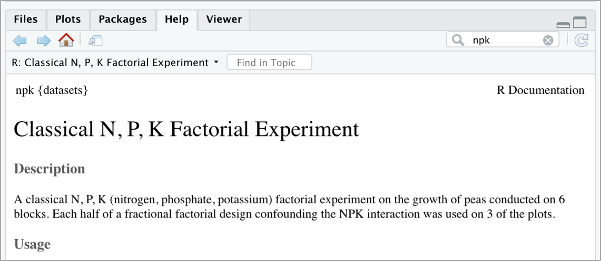

R 과 MINIO - (1) : CSV 파일 저장하기 / 가져오기¶
IRIS SaaS 의 기본 스토리지로 제공되는 MINIO(minio 홈페이지) 는 100 % 오픈 소스(Apache V2 라이센스)의 분산 객체 스토리지 시스템입니다.
현재 MINIO는 272.5M + 이상의 docker pull 및 18K + git commit을 통해 전 세계적으로 배포되고 있습니다.
MINIO 는 Amazon S3 클라우드 서비스와 호환됩니다. 따라서 기술적으로 S3 호환 API를 사용하여 MinIO 스토리지에 액세스 할 수 있습니다. R을 통해 Amazon Web Services (AWS)에 액세스하기위한 패키지로는 cloudR 팀이 개발한 aws.s3 이라는 패키지가 있습니다.
하지만 MINIO 에 access 하는데는 사용상의 어려움이 있어 minio.s3 라는 패키지를 사용합니다.
현재(2020.04월) minio.s3 는 CRAN 이 아닌 github 에서 설치해야 합니다.
이 문서에는 IRIS SaaS 의 대화형 분석 에 embedding 되어 있는 분석 툴인 RStudio 에서
MINIO 의 파일이나 R object 를 가져오거나
R 에서 만든 파일이나 R object 를 MINIO 에 저장하는 방법을 설명합니다.
설치¶
먼저 aws.s3 패키지를 CRAN 에서 설치하고, minio.s3 를 install_github 로 설치합니다.
install.packages(aws.s3) # from CRAM
library(devtools)
install_github("nagdevAmruthnath/minio.s3")
AWS 환경변수 설정하기¶
대화형 분석 RStudio 에서 AWS 환경 변수를 설정합니다.
Sys.setenv("AWS_ACCESS_KEY_ID" = "*******", # enter your credentials
"AWS_SECRET_ACCESS_KEY" = "******", # enter your credentials
"AWS_DEFAULT_REGION" = "local",
"AWS_S3_ENDPOINT" = "***.***.***.***:****") # ip:port
minio bucket 을 확인해 봅니다.
library("minio.s3")
bucketlist(add_region = FALSE)
# access 가능한 bucket list 가 출력됩니다.
get_bucket(bucket = 'my-bucket', use_https = F)
# 퍼블릭 버킷에있는 모든 객체의 목록이 나옵니다.
minio.s3 패키지의 자세한 설명은 Nagdev Amruthnath 의 minio.s3 github 를 꼭 보시기 바랍니다.
R 에서 만든 dataframe 을 CSV 파일 형태로 MINIO 에 저장하기¶
R 에 내장되어 있는 dataset 중 하나인 npk 데이터를 CSV 파일 형태로 MINIO 에 저장하는 예제입니다.
npk 데이터에 대한 설명은 help 에서 npk 로 검색해보세요.
npk 데이터는 5개 컬럼의 24개 rows 로 된 dataframe 입니다.
> data("npk")
> npk
block N P K yield
1 1 0 1 1 49.5
2 1 1 1 0 62.8
3 1 0 0 0 46.8
4 1 1 0 1 57.0
5 2 1 0 0 59.8
6 2 1 1 1 58.5
7 2 0 0 1 55.5
8 2 0 1 0 56.0
9 3 0 1 0 62.8
10 3 1 1 1 55.8
11 3 1 0 0 69.5
12 3 0 0 1 55.0
13 4 1 0 0 62.0
14 4 1 1 1 48.8
15 4 0 0 1 45.5
16 4 0 1 0 44.2
17 5 1 1 0 52.0
18 5 0 0 0 51.5
19 5 1 0 1 49.8
20 5 0 1 1 48.8
21 6 1 0 1 57.2
22 6 1 1 0 59.0
23 6 0 1 1 53.2
24 6 0 0 0 56.0
> str(npk)
'data.frame': 24 obs. of 5 variables:
$ block: Factor w/ 6 levels "1","2","3","4",..: 1 1 1 1 2 2 2 2 3 3 ...
$ N : Factor w/ 2 levels "0","1": 1 2 1 2 2 2 1 1 1 2 ...
$ P : Factor w/ 2 levels "0","1": 2 2 1 1 1 2 1 2 2 2 ...
$ K : Factor w/ 2 levels "0","1": 2 1 1 2 1 2 2 1 1 2 ...
$ yield: num 49.5 62.8 46.8 57 59.8 58.5 55.5 56 62.8 55.8 ...
dataframe 인 npk 를 CSV 파일로 MINIO 에 저장합니다. s3write_using 을 이용하여 npk_data.csv 로 MINIO 에 저장합니다.
s3write_using(npk, FUN = write.csv, row.names= F, object = "/TEST/npk_data.csv", bucket = "my-bucket")
MINIO 의 CSV파일을 가져와서 dataframe 저장¶
MINIO 에 저장된 CSV 파일을 가져와서 R 의 file path 에 다운로드하여 저장하는 예제입니다. 이 방법은 파일을 다운받아서 계속 사용할 경우에 유용하며, 특히 파일을 다양한 옵션으로 읽어 들일 때 사용합니다.
> save_object("/TEST/npk_data.csv", file = "local_my_npk.csv", bucket = "demo", use_https =F)
[1] "local_my_npk.csv"
> my_data <- read.csv("local_my_npk.csv", header=T)
> my_data
block N P K yield
1 1 0 1 1 49.5
2 1 1 1 0 62.8
3 1 0 0 0 46.8
4 1 1 0 1 57.0
5 2 1 0 0 59.8
6 2 1 1 1 58.5
7 2 0 0 1 55.5
8 2 0 1 0 56.0
9 3 0 1 0 62.8
10 3 1 1 1 55.8
11 3 1 0 0 69.5
12 3 0 0 1 55.0
13 4 1 0 0 62.0
14 4 1 1 1 48.8
15 4 0 0 1 45.5
16 4 0 1 0 44.2
17 5 1 1 0 52.0
18 5 0 0 0 51.5
19 5 1 0 1 49.8
20 5 0 1 1 48.8
21 6 1 0 1 57.2
22 6 1 1 0 59.0
23 6 0 1 1 53.2
24 6 0 0 0 56.0
다른 방법은 s3read_using() 에 user define Function 을 넣어서 데이터파일을 바로 dataframe 으로 생성하는 방법입니다.
# 예제 1
> my_npk <- s3read_using(FUN=read.csv, header=T, object='npk_data.csv', bucket='demo', opts=list( use_https=F))
> str(my_npk)
'data.frame': 24 obs. of 5 variables:
$ block: int 1 1 1 1 2 2 2 2 3 3 ...
$ N : int 0 1 0 1 1 1 0 0 0 1 ...
$ P : int 1 1 0 0 0 1 0 1 1 1 ...
$ K : int 1 0 0 1 0 1 1 0 0 1 ...
$ yield: num 49.5 62.8 46.8 57 59.8 58.5 55.5 56 62.8 55.8 ...
# 예제 2
# read.csv 함수의 argument 를 모두 추가할 수 있습니다.
> my_npk <- s3read_using(FUN=read.csv, header=T, colClasses=c('block' = 'character'), object='npk_data.csv', bucket='demo', opts=list( use_https=F))
> str(my_npk)
'data.frame': 24 obs. of 5 variables:
$ block: chr "1" "1" "1" "1" ...
$ N : int 0 1 0 1 1 1 0 0 0 1 ...
$ P : int 1 1 0 0 0 1 0 1 1 1 ...
$ K : int 1 0 0 1 0 1 1 0 0 1 ...
$ yield: num 49.5 62.8 46.8 57 59.8 58.5 55.5 56 62.8 55.8 ...